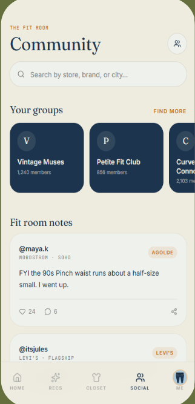
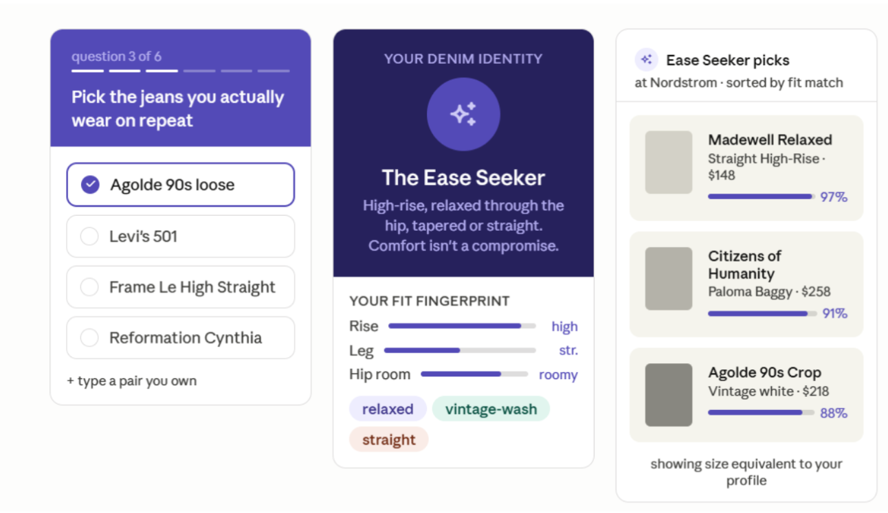
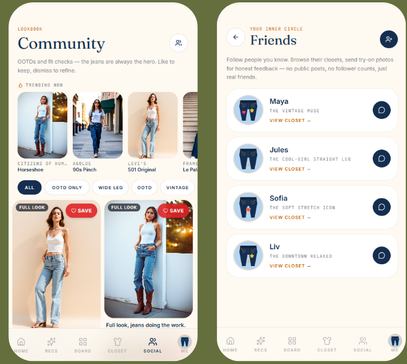
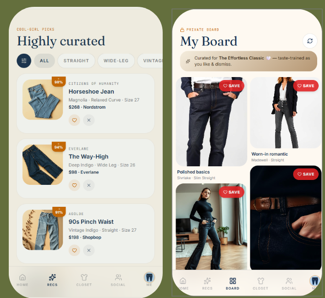
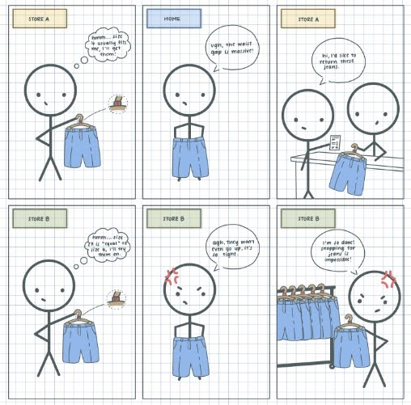
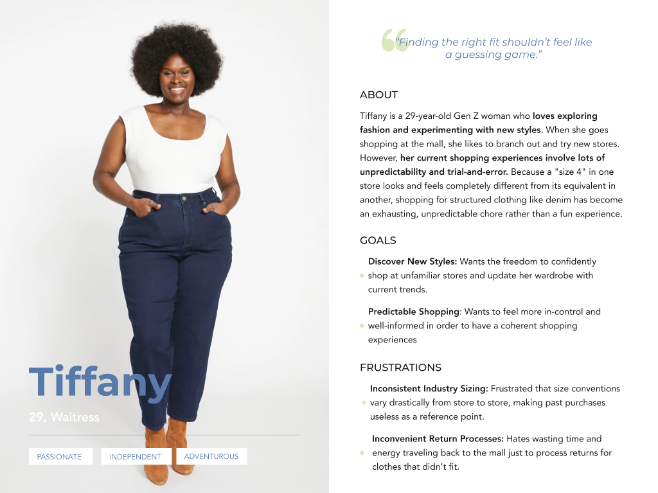
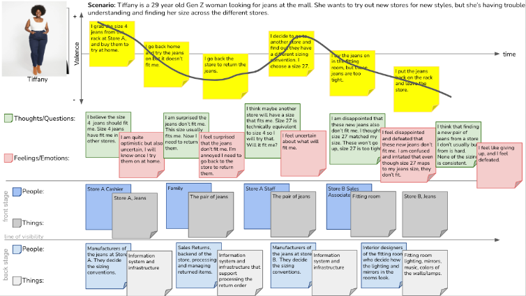
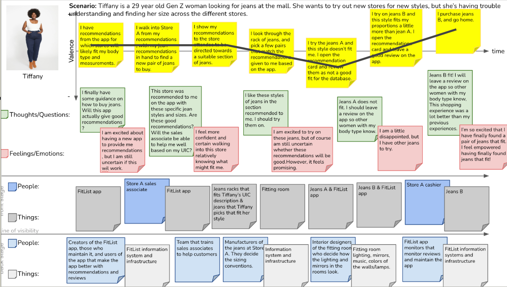
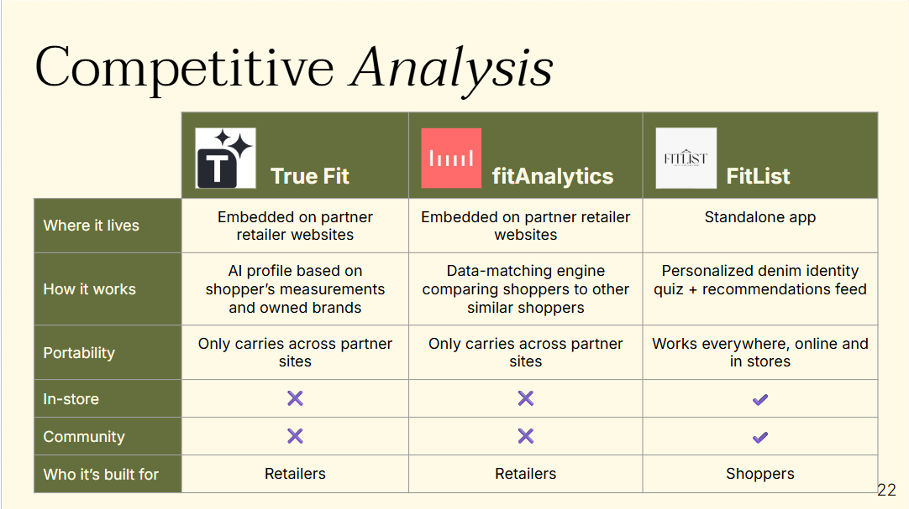
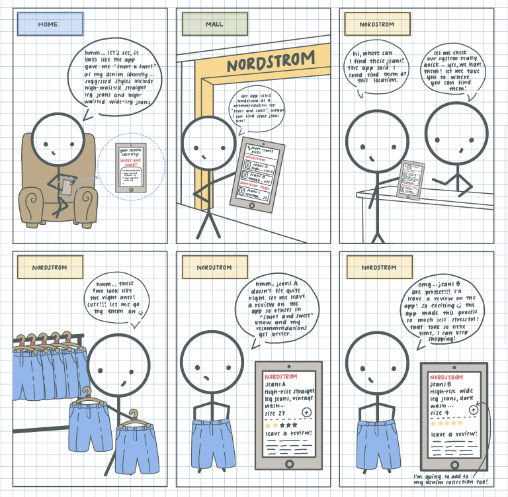

The problem
Sizing has no standard, brands use vanity sizing, and fit models rarely reflect diverse bodies. Shoppers slide from optimism to giving up.
Case study
Buying women's jeans is a guessing game that ends in self-doubt. FitList turns it into a shared, confidence-building experience.

Sizing has no standard, brands use vanity sizing, and fit models rarely reflect diverse bodies. Shoppers slide from optimism to giving up.
Led research and journey mapping, used behavioral psychology to set design goals, and led the denim identity quiz and lean canvas research.
Testers responded best to the quiz, the friends page, and the Pinterest-style board. They were unlikely to retake the quiz, our main open problem.
This project taught me to design from emotion first. Using Kahneman's experiencing and remembering selves, I mapped how shopping should feel at each step, then shaped the screens around it. The friends page, with no public posts or follower counts, came directly from wanting shoppers to feel supported, not judged. The question I'll carry into every project: does the story I designed for the user show up in the product?
The first versions, made in Figma Make and Claude, had an onboarding quiz, denim identity reveal, recommendations feed, virtual closet, and community page.


Then we made the community the focus.
A Pinterest-style board, a friends page, direct fit sharing, and a whole-look board.


A size 4 in one store is not a size 4 in the next.



1. Design for how shopping is remembered, not only how it feels. Using Kahneman's experiencing and remembering selves, we aimed for control in the moment and an "aha" ending with jeans that fit.
2. Replace guesswork with a "denim identity" quiz. Inspired by Spotify Wrapped and BuzzFeed quizzes, it gives personalized, cross-brand recommendations that also work in store.
3. Make the community personal, not public. Solo shopping is isolating, so we built a Pinterest-style board and a friends page with no public posts or follower counts, just honest feedback from people you know.

True Fit and fitAnalytics live on partner retailer sites and are built for retailers. FitList is a standalone shopper app that works online and in store, with a community.


Key learning: design from emotion first, then shape the screens around it.
The quiz and denim identity, the Pinterest-style board, the friends page, and shopping the whole look all resonated.
5 user tests, 20 minutes each
Users are unlikely to retake the quiz, so recommendations could go stale as fit changes. Next, I'd update recommendations based on activity on community pages. Testers also asked for an outfit-of-the-day leaderboard.
Harper (2023), The Guardian; Hassenzahl (2010), Experience Design; Huta (2017), Journal of Constructivist Psychology; Ruspoli (2010), Being in the World.
Questions or want to talk? shubhihanda@gmail.com · LinkedIn (opens in new tab)